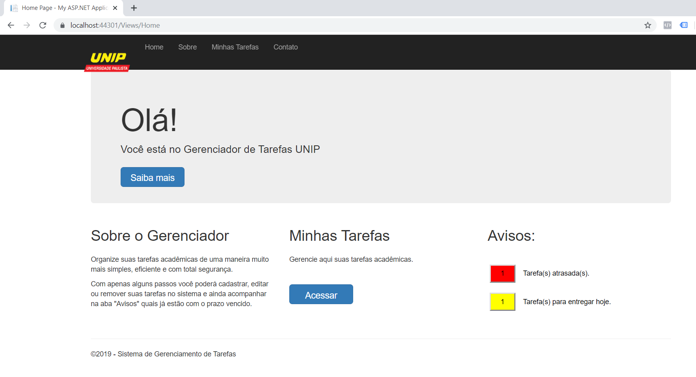
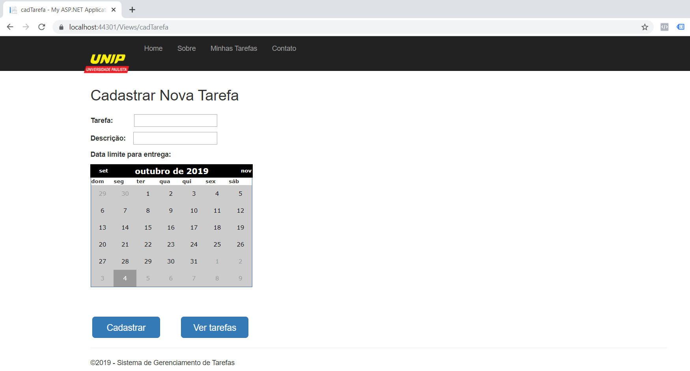
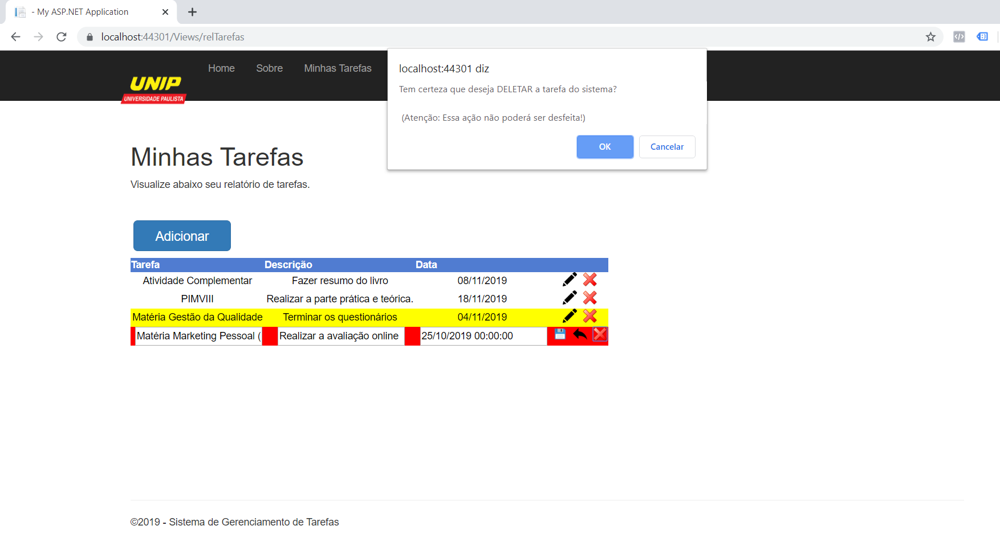

Gerenciador de Tarefas
Descrição do projeto
O Gerenciador de Tarefas é um sistema desenvolvido em ASP.NET de uma aplicação web para ajudar alunos no gerenciamento de suas tarefas acadêmicas (trabalhos, provas, atividades complementares, DPs e etc), possibilitando um maior controle e segurança para a realização de todas as tarefas dentro do prazo estabelecido pela instituição de ensino.
Tela de Cadastro
Clicando em “Adicionar” o usuário será levado para esse formulário, onde deverá preencher todas as informações (campos obrigatórios) para que consiga efetuar com sucesso o cadastro.
Caso o usuário informe todos os dados corretamente, o sistema informará que a tarefa foi cadastrada com sucesso e incluirá as informações no banco de dados.
Minhas Tarefas
Para conferir as tarefas cadastras, o usuário não precisa ir até o menu superior ou na página inicial, ele pode simplesmente clicar no botão “Ver tarefas” para ser redirecionado para sua lista de tarefas.
Nessa página é possível visualizar todas as tarefas cadastras (com destaque para as tarefas em atraso e que estão para vencer). Além disso, o usuário tem total controle de edição, podendo editar ou excluir uma tarefa a qualquer momento
← Voltar ao portfolio